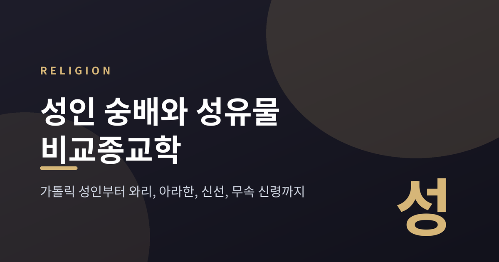
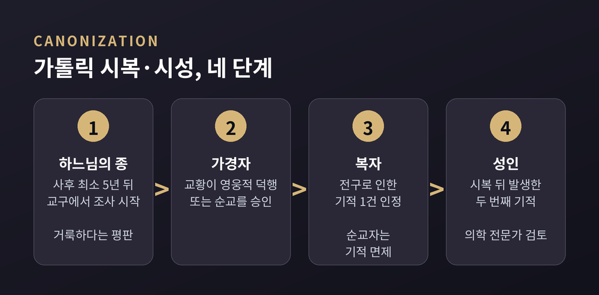
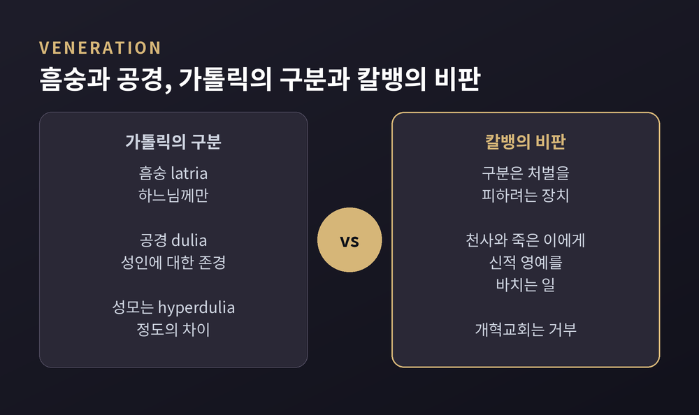
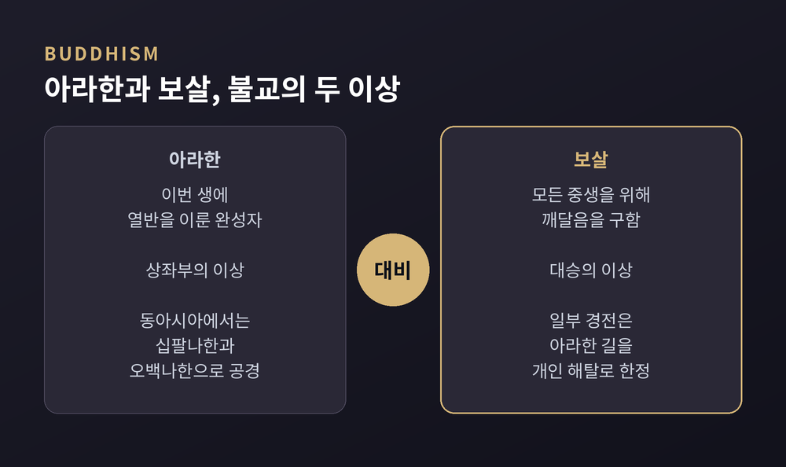
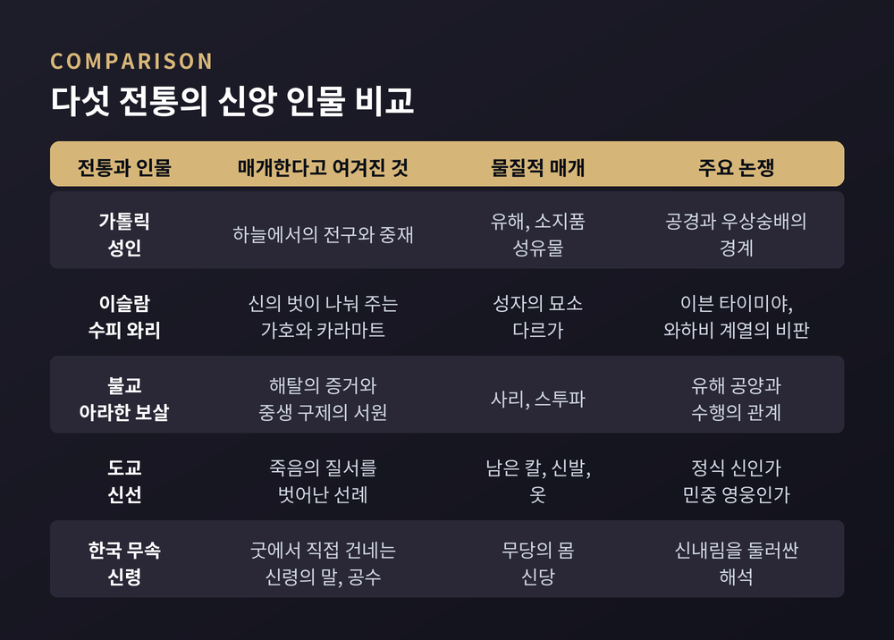
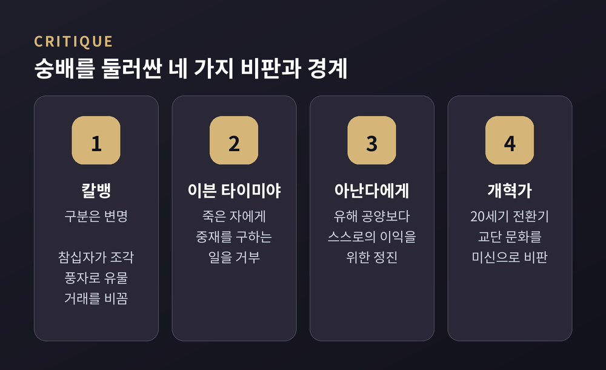

가톨릭 성인, 수피 와리, 불교 아라한과 보살, 도교 신선, 한국 무속 신령 — 브라운의 후견 모델로 비교해 봅니다
세 줄 요약

오늘은 신앙 인물에 대한 숭배를 비교종교학의 눈으로 살펴보려 합니다. 가톨릭 성인과 성유물을 출발점으로 삼아, 이슬람의 와리, 불교의 아라한과 보살, 도교의 신선, 한국 민간신앙의 신령까지 차례로 비교하겠습니다. 이 글은 특정 신앙을 옹호하거나 비판하지 않고, 각 전통에서 그 인물이 무엇을 이어 준다고 여겨졌는지에 초점을 맞춥니다.
성인 숭배 연구에서 출발점은 피터 브라운입니다. 1935년 더블린에서 태어난 브라운은 후기 고대 연구를 대표하는 역사학자입니다. 그의 1981년 저서 『성인 숭배』는 1978년 시카고대학에서 한 하스켈 강연에서 나왔습니다.
브라운이 문제 삼은 것은 오랜 이분법이었습니다. 교양 있는 엘리트는 순수한 신앙을 갖고, 대중은 미신에 매달렸다는 구도입니다. 브라운은 반대로 성인 숭배가 엘리트와 민중의 세계를 모두 가로지르며 움직였다고 보았습니다.
그가 눈여겨본 것은 '후견'의 문법입니다. 성인은 보호와 중재를 베풀고, 신자는 기도와 봉사와 선물로 답하는 호혜 관계입니다. 성유물은 이 관계의 물증이었습니다. 토머스 헤드의 개설에 따르면 유해는 '하늘과 땅의 결합'이었고, 성인이 이곳에 계속 머문다는 증표였습니다. 4세기 말 마르티누스의 묘비에는 영혼은 하늘에 있으되 기적의 힘으로 이곳에 온전히 현존한다는 뜻의 글이 새겨졌다고 전해집니다.
브라운은 이 죽은 자들을 '아주 특별한 죽은 자'라는 말로 불렀습니다. 평범한 망자와 달리 공동체의 정의와 용서와 권력을 조달하는 통로가 되었기 때문입니다. 이 렌즈를 쥐고 다른 전통으로 건너가 보겠습니다.
가톨릭에서 성인은 하늘에서 신자를 위해 전구(중재)하는 존재로 여겨집니다. 눈에 띄는 것은 이 인정이 하나의 절차로 제도화되어 있다는 점입니다.
초기 교회에서는 지역 주교가 자기 교구의 공경을 관리했습니다. 993년 아우크스부르크의 울리히가 교황 요한 15세에게 시성된 것이 최초의 확실한 교황 시성으로 꼽힙니다. 12세기 후반 알렉산데르 3세는 교회의 권위 없이 공경할 수 없다고 선언해, 사실상 판단권을 로마에 모았습니다.
오늘날의 절차는 다음과 같습니다. 지역 주교가 사후 최소 5년이 지난 뒤 조사를 시작하고, 후보는 '하느님의 종'이 됩니다. 영웅적 덕행이나 순교가 인정되면 가경자, 그의 전구로 일어난 기적이 인정되면 복자, 시복 뒤 두 번째 기적이 인정되면 성인이 됩니다. 순교자는 첫 기적 없이 곧바로 복자가 됩니다. 기적은 '완전하고 지속적'이어야 하며, 신자와 비신자를 포함한 의학 전문가들이 검토합니다.

1983년 요한 바오로 2세의 교령 이후 조사는 교구 단계에서 이뤄지고 로마의 시성성이 감독합니다. 시성성에는 의료 전문가와 역사·신학 고문, 그리고 신앙 증진관이 있습니다. 마더 테레사는 1997년에 세상을 떠나 1999년 심사가 시작되었고, 2003년 시복, 2016년 시성되었습니다. 이례적으로 빠른 경우로 꼽힙니다.
성유물도 체계가 있었습니다. 2017년 이전에는 유해를 1등급, 소지품을 2등급, 접촉한 천 조각을 3등급으로 나눴고, 이후 두 갈래로 단순화되었습니다. 중세에는 유물 거래와 위조가 큰 문제였습니다. 아우구스티누스가 가짜 유해를 파는 수도자를 비난했고, 1215년 제4차 라테란 공의회는 위조 유물을 단죄했습니다.
여기서 가장 오래된 쟁점이 나옵니다. 성인 공경은 우상숭배인가, 아닌가.

가톨릭 신학은 흠숭(latria)을 하느님께만 드리는 예배로, 공경(dulia)을 피조된 인격의 탁월함에 대한 존경으로 구별합니다. 성모께는 더 높은 정도의 공경(hyperdulia)을 드린다고 설명하지만, 이것 역시 종류는 같고 정도만 다르다는 것이 아퀴나스의 정리입니다. 제2차 니케아 공의회(787)는 상에 바치는 영예가 그 원형에 이른다고 선언했습니다.
반면 칼뱅은 이 구분이 천사와 죽은 이에게 신적 영예를 바치면서도 책임을 피하려고 만든 것이라고 보았습니다. 개혁교회 계열이 공경을 우상숭배의 소지가 있다고 거부하는 것도 이 연장선입니다. 두 입장은 '어디까지가 경의이고 어디서부터 예배인가'라는 선 긋기에서 갈립니다. 이 글은 그 선이 어디가 옳은지 판정하지 않습니다.
이슬람에서 성인에 해당하는 말은 와리(wali)입니다. 본래 '보호자, 조력자, 벗'을 뜻하고, '신의 벗'으로 이해됩니다. 근거 구절로는 쿠란 10장 62절이 자주 인용됩니다. 신의 벗들에게는 두려움도 슬픔도 없다는 대목입니다.
이 개념은 가톨릭의 성인과 겹치는 듯하지만, 용어와 맥락이 다릅니다. 와리의 기적은 카라마트라 하여, 예언자의 기적인 무으지자와 구별됩니다. 물 위를 걷거나 마음속 비밀을 알아보는 일이 전해집니다. 9세기 말에서 10세기 초 하킴 티르미디가 성인론을 체계화했고, 후대에는 쿠틉(축)을 정점으로 하는 성인의 위계까지 논의되었습니다.
12~14세기에 수피 교단이 조직되면서 성인 공경은 지금의 모습을 갖췄습니다. 성인의 묘소에는 다르가가 세워졌습니다. 인도 아지메르의 모이누딘 치슈티, 델리의 니자무딘 아울리야, 라호르의 알리 후즈위리의 묘가 대표적이고, 모스크와 숙소와 학교가 함께 딸립니다. 신자들은 이곳을 찾아 지야라(방문)를 하고 가호를 구합니다.
이 실천에는 이슬람 내부에서도 찬반이 있습니다. 수니 법학자 다수는 예언자 묘 방문을 권장했고, 이븐 하자르는 이를 '최선의 행위' 가운데 하나로 보았습니다. 시아파는 지야라가 성인을 숭배하는 것이 아니라 가호를 구하고 성인을 통해 중재를 청하는(타와쑬) 일이라고 설명합니다. 반대편에는 이븐 타이미야가 있습니다. 그는 죽은 자에게 중재를 구하는 것을 거부했고, 이븐 하자르는 이를 '가장 추한 입장 중 하나'라 평했습니다. 18세기 이후 와하비즘과 살라피 계열은 성인 숭배를 우상숭배로 규정했습니다. 20세기 전환기에는 근대주의 개혁가들이 교단이 미신을 조장한다고 비판했습니다.
불교에서 숭배 대상은 둘로 나뉩니다. 상좌부에서 아라한은 이번 생에 열반을 이룬 완성자입니다. 대승은 모든 중생을 위해 깨달음을 구하는 보살의 길을 더 높이 두었고, 일부 경전은 아라한의 길을 개인 해탈에 머문다고 한계 지었습니다. 그럼에도 동아시아 불교는 십육나한, 십팔나한, 오백나한을 공경해 왔습니다. 891년 관휴가 그린 나한도가 항저우 성인사에 보존되어 있습니다.

물질의 매개는 사리가 맡았습니다. 마하파리닙바나 숫타에 따르면 부처가 쿠시나가라에서 열반한 뒤 도나 바라문이 화장한 유골을 여덟 몫으로 나눠 마가다의 아자타삿투, 릿차비, 석가족 등에 분배했습니다. 아쇼카 왕은 이 가운데 일곱 몫을 모아 8만 4천 탑에 다시 나눴다고 전합니다. 고고학에서는 1898년 피프라와에서 뼈 조각과 재가 든 항아리 다섯 개가 나왔고, 1987년 중국 파먼사 지하에서 부처의 손가락뼈로 전해지는 유골이 발견되었습니다.
사리는 유골에 한정되지 않습니다. 진주 같은 구슬, 육신, 그리고 경전을 가리키는 법신사리까지 포함합니다. 은혜와 축복을 일으키고 수행자의 청정을 보여 주는 증거로 여겨졌습니다.
여기에도 긴장은 있습니다. 같은 경전에서 아난다가 유해를 어떻게 모셔야 하냐고 묻자 부처는 이렇게 답합니다. 여래의 유해에 공양하느라 방해받지 말고 스스로의 이익을 위해 정진하라고. 현명한 이들이 알아서 모실 것이라는 말도 덧붙입니다. 이것을 사리 신앙과 어긋난다고 읽을지, 출가자와 재가자의 역할 분담으로 읽을지는 해석이 갈립니다. 같은 대목에서 부처는 신자가 찾아 경건히 바라볼 곳으로 탄생, 성도, 첫 설법, 열반의 네 장소를 꼽았습니다.
도교의 신선은 앞의 인물들과 결이 다릅니다. 성인이 '죽은 뒤 하늘에 있는 존재'라면, 신선은 수행으로 몸 자체가 변한 존재로 그려집니다. 320년경 갈홍의 『포박자』는 신선을 세 등급으로 나눴습니다. 허공으로 오르는 천선, 명산에 머무는 지선, 그리고 죽은 듯 몸을 벗고 떠나는 시해선입니다.
시해는 '시신에서 풀려난다'는 뜻입니다. 저승 관료 체계의 사망 등록을 우회한다는 식으로 서술되기도 합니다. 시신 대신 지팡이나 칼, 신발이나 옷이 남는 경우가 많았습니다. 갈홍은 기원전 2세기의 이소군이 시해선이라고 판단했는데, 관을 열자 옷과 모자만 있었기 때문입니다. 도교에서는 유골이 아니라 유골이 없다는 사실이 증거가 되는 셈입니다.
대중의 숭배는 팔선으로 모였습니다. 12~13세기 전진교 문헌을 통해 널리 알려졌고, 명대 『팔선출처동유기』가 문학적으로 자리를 굳혔습니다. 이철괴는 의약, 남채화는 꽃 가꾸는 이들, 장과로는 장수와 연결됩니다. 신도들은 이들을 정식 신이라기보다 민중의 영웅이자 성인처럼 대한다고 설명됩니다. 관우도 비슷합니다. 수나라 때부터 신격화되었고 1614년 만력제가 '삼계복마대제'의 칭호를 내렸습니다. 도교에서는 관성제군, 불교에서는 가람보살로 모셔지니 한 인물이 여러 전통의 옷을 입은 것입니다. 서울 동묘는 1601년에 세워졌습니다.
한국 무속의 신령은 130여 위로 분류됩니다. 자연과 우주의 힘을 인격화한 산신 같은 신령이 있고, 한때 사람이었던 군왕과 관리, 장군 신령이 함께 있습니다. 최영과 임경업이 대표적입니다. 최영은 1316년에 태어난 고려 장군으로, 1388년 이성계의 쿠데타 뒤 처형되었습니다. 억울한 죽음 앞에서 자기 무덤에 풀이 나지 않으리라 예언했다는 전설이 전합니다. 인천 일대에는 한국전쟁의 영웅으로 맥아더를 모시는 무당도 있다고 기록되어 있습니다.
여기서 매개의 방식은 앞의 전통과 뚜렷이 다릅니다. 가톨릭과 수피, 불교에서는 인물이 하늘 또는 신 사이에서 '청을 전한다'면, 무속의 굿은 신령이 인간에게 직접 말할 수 있게 해 주는 거의 유일한 의례로 설명됩니다. 신내림을 받은 강신무가 몸을 내주면 신령의 말, 곧 공수가 나옵니다. 세습무는 빙의 없이 매개합니다. 무당은 의뢰인과 보이지 않는 존재 사이를 잇는 의례 전문가입니다. 조상 역시 유교 제사가 모시는 범위보다 넓게, 외가나 자손 없이 죽은 이까지 포함해 모십니다.

다섯 전통을 나란히 놓으면 공통의 질문이 보입니다. 이 인물은 사람과 초월 사이의 어디에 서 있는가. 그리고 그 연결에 몸과 물건이 필요한가.
가톨릭 성인은 중재하고, 수피 와리는 가호를 나눠 주며, 아라한은 해탈의 증거이고, 보살은 서원으로 중생을 돕습니다. 신선은 죽음의 질서를 비껴간 선례이고, 무속의 신령은 직접 말합니다. 물질도 갈립니다. 유해와 사리와 묘소는 인물이 지금도 가까이 있다는 감각을 줍니다. 반대로 도교의 시해는 남은 것이 없음을 증거로 삼습니다.
그리고 어느 전통에서나 반론이 있었습니다.

칼뱅은 구분을 의심했고, 이븐 타이미야는 죽은 자의 중재를 거부했습니다. 불교 경전은 유해보다 수행에 방점을 찍는 말을 남겼으며, 20세기 근대주의 개혁가들은 교단 문화를 미신으로 보았습니다. 흥미로운 점은 같은 비판이 안쪽에서도 나왔다는 것입니다. 숭배가 컸기 때문에 그만큼 경계도 필요했던 셈입니다.
정리하면 이렇습니다. 성인 숭배는 하나의 신앙이 아니라, 사람이 초월과 거리를 재는 여러 방식의 모음입니다.
"성인은 하늘에 있는 사람이기 전에, 지상의 공동체가 기대고 싶어 한 연결 고리였다."
브라운이 말한 '아주 특별한 죽은 자'는 그 연결 고리의 오래된 이름입니다. 내가 모시는 인물이 아니더라도, 다른 전통의 인물이 무엇을 이어 주는지 살펴보면 자신의 전통도 다시 보이는 법입니다. 여러분이 알고 있는 성인과 영웅은 어떤 소원을 대신 짊어지고 있을까요.